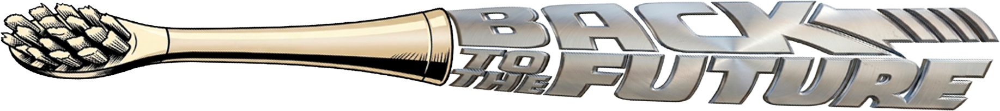
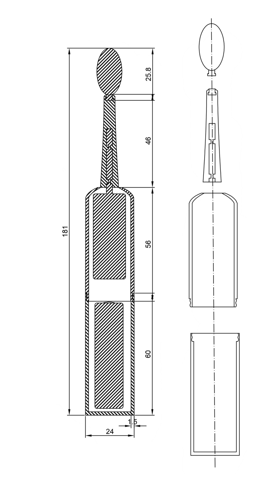
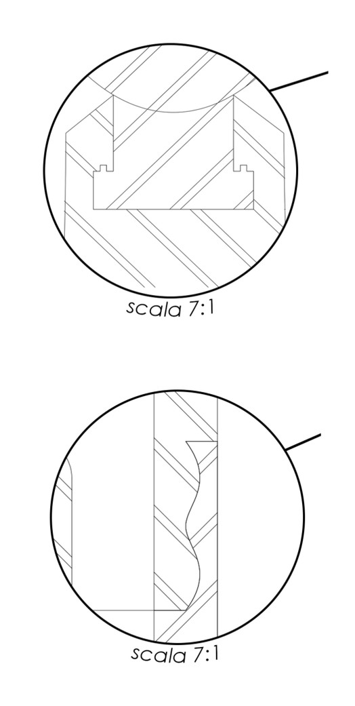
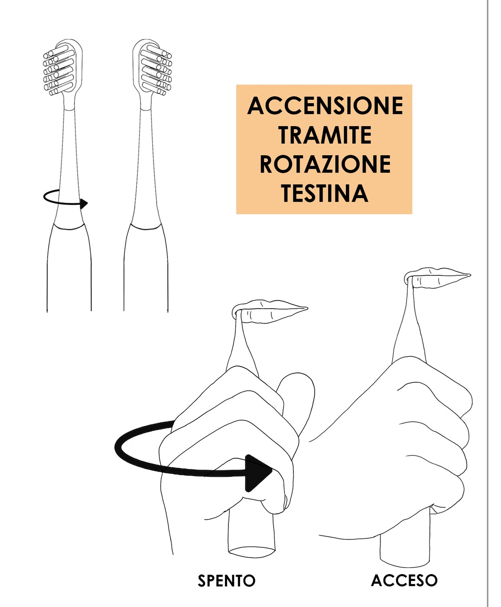
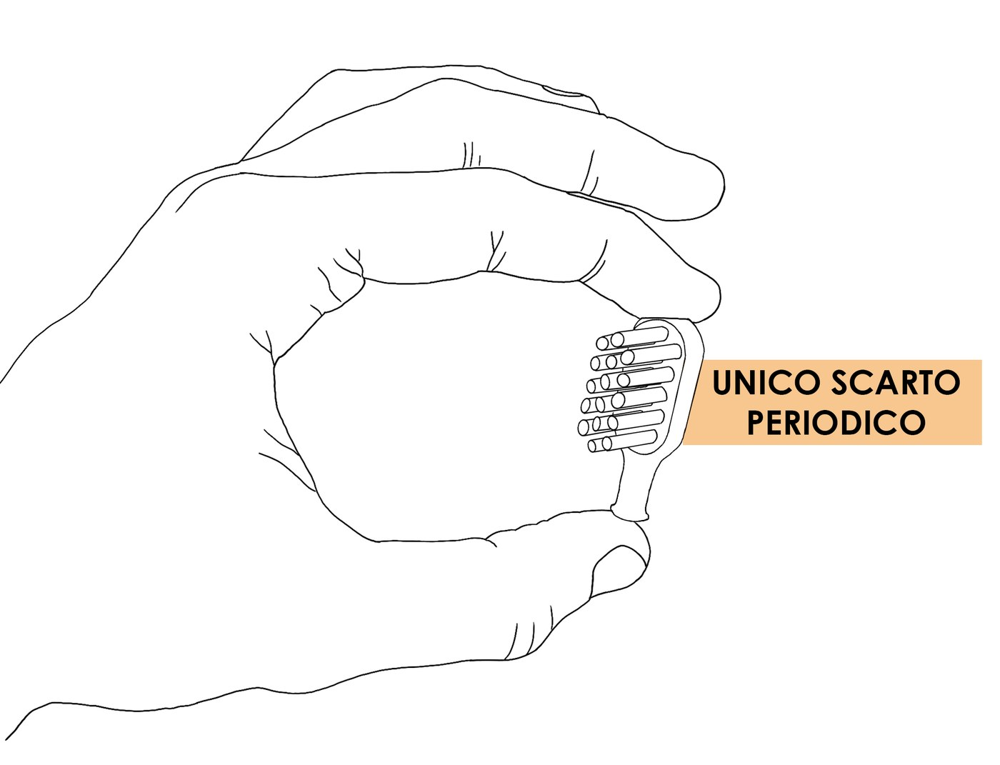
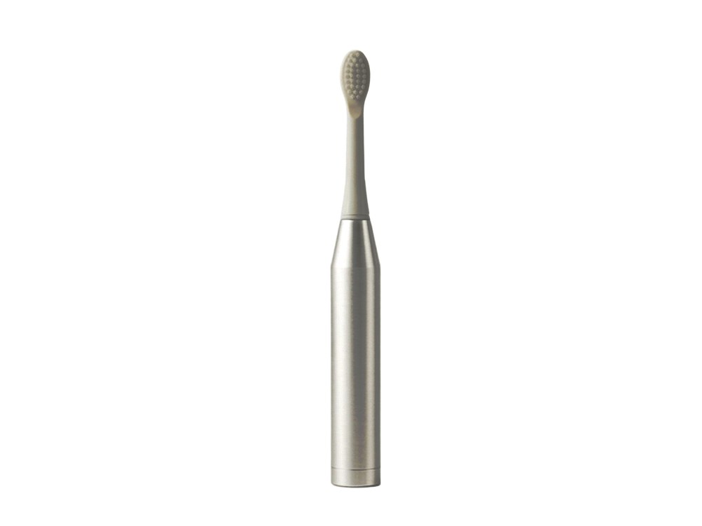
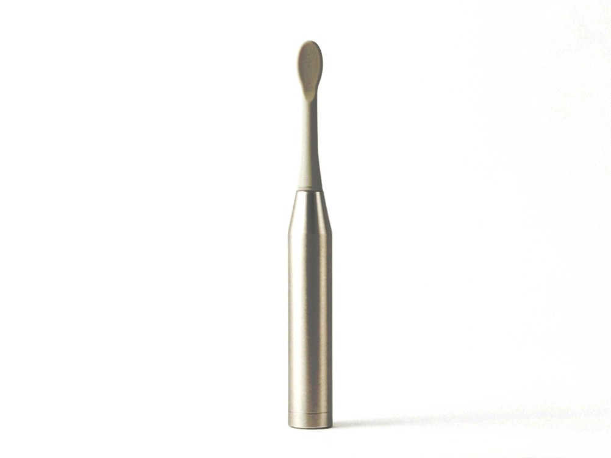
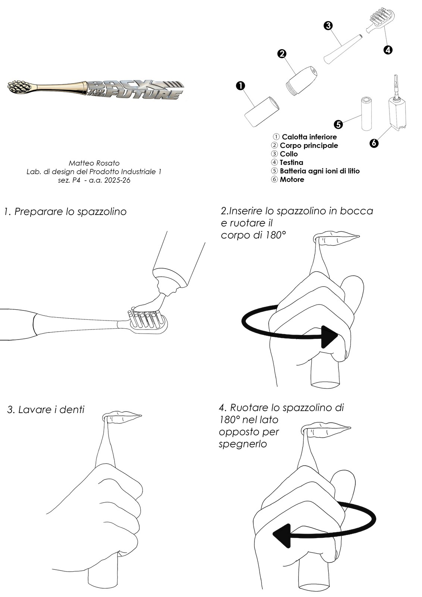
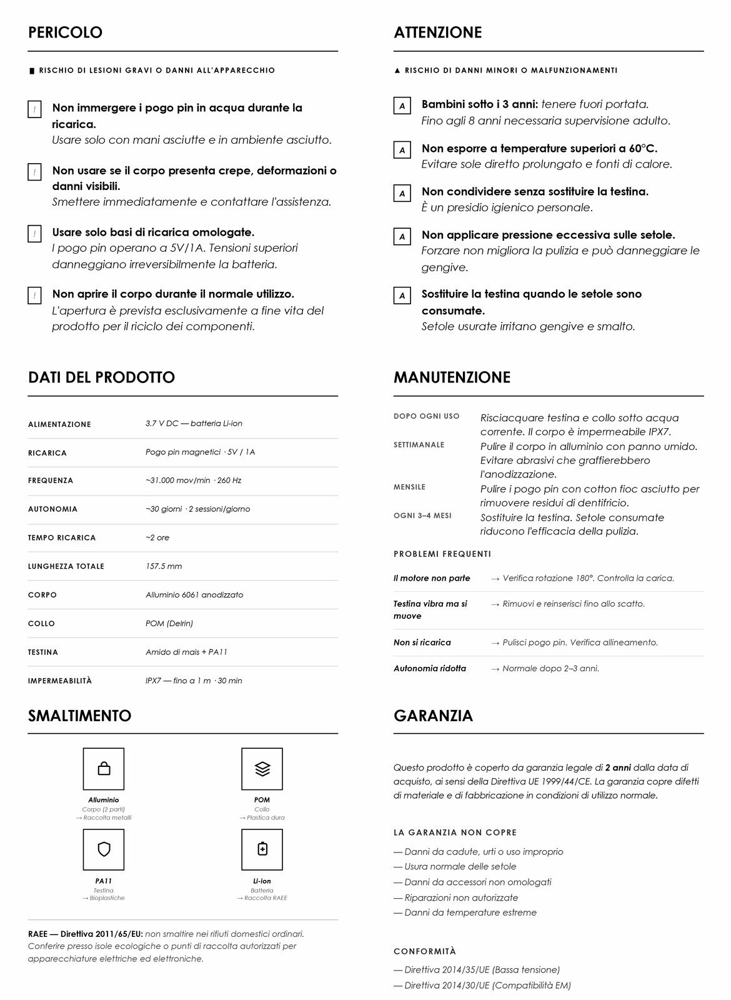

Lo spazzolino elettrico medio è un blocco di plastica con dentro un motore e una batteria incollata: quando la batteria si esaurisce si getta tutto.
* Stima National Geographic, 2019 [F12] — seguendo le raccomandazioni di sostituzione dell'ADA. Proiezione mondiale: ~23 miliardi/anno.
* Stima di progetto bottom-up (intervalli: 5,5–8,5 e 2,5–4,5 kg) su fattori di emissione da fonti primarie: alluminio IAI [F5], bioplastiche [F6][F7], batterie IVL [F10], elettricità ISPRA [F11]. Metodo e passaggi completi nel documento Calcoli e fonti del progetto. Riscontro: nell'unica LCA peer-reviewed sugli spazzolini [F1] l'elettrico convenzionale è il peggiore in 15 categorie d'impatto su 16.
Il progetto rovescia la logica dell'usa-e-getta: ciò che è tecnico dura, ciò che si consuma è minimo e di origine vegetale, e tutto — alla fine — torna materia.
Il corpo in alluminio 6061 anodizzato, lavorato dal pieno in CNC, è progettato per superare i dieci anni di servizio — il doppio di un elettrico convenzionale, che muore con la batteria incollata dopo circa 5 anni.
L'unico componente consumabile è la testina: quattro all'anno, agganciate a snap fit, in bioplastica con setole vegetali. L'elettrico convenzionale aggiunge un corpo intero — motore e batteria compresi — ogni 5 anni circa.
Due giri di vite aprono il corpo senza attrezzi: ogni componente si separa a mano e ha un flusso di riciclo definito. Niente colle, niente batterie prigioniere.
Trascina per ruotare, rotellina per lo zoom, clicca una parte per leggerne la scheda. Fuori dal riquadro la pagina scorre normalmente.
Tre componenti, tre famiglie di materiali, tre vite diverse. Per ognuno, il confronto diretto con l'alternativa scartata: barra più lunga = proprietà migliore.
Perché non l'ABS: costa meno e pesa meno, ma vive una frazione del tempo e il suo riciclo degrada il materiale. L'alluminio si rilavora all'infinito senza perdita di proprietà, resiste a urti e ossidazione, e l'anodizzazione elimina vernici e rivestimenti.
Perché non il PA12: buon polimero, ma meno rigido, con maggiore assorbimento d'umidità e minore resistenza a fatica nello snap fit. Il POM è autolubrificante, regge milioni di cicli di vibrazione a 260 Hz e mantiene il gioco dello snap fit costante per anni.
Perché non il PP: è lo standard di settore, ma è fossile e di fatto non riciclato in questo formato. La testina è l'unico scarto periodico: dev'essere di origine vegetale. Il corpo in bioplastica da amido è compostabile in impianto industriale; le setole in PA11 sono bio-based (−80% CO₂ rispetto alle poliammidi fossili [F7]) ma non biodegradabili. L'hot tufting le fissa per fusione, senza graffette metalliche.
La maggior parte dei prodotti viene progettata fino al momento della vendita. Questo è stato progettato fino al momento in cui smette di esistere — e torna materia prima.
Estratti dalle tavole tecniche e render di prodotto. Clicca per ingrandire, clicca di nuovo per lo zoom.








Tutti i dati quantitativi del sito derivano da fonti primarie verificate o da calcoli di progetto dichiarati. Il procedimento completo, passo per passo, è nel documento Calcoli e fonti allegato al progetto.
Le masse dei componenti sono stime di progetto ricavate dalle quote di Tav. 9 (lunghezza 157,5 mm, Ø21, parete 1,5 mm). Le stime di CO₂ sono calcoli bottom-up trasparenti, non una LCA certificata: gli intervalli di incertezza sono dichiarati nel documento di calcolo.